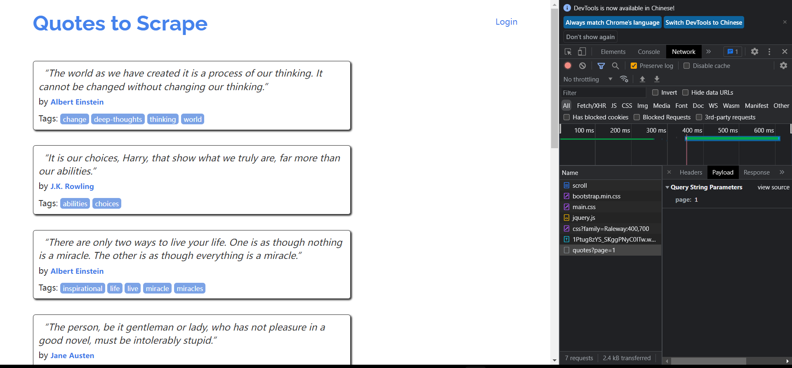
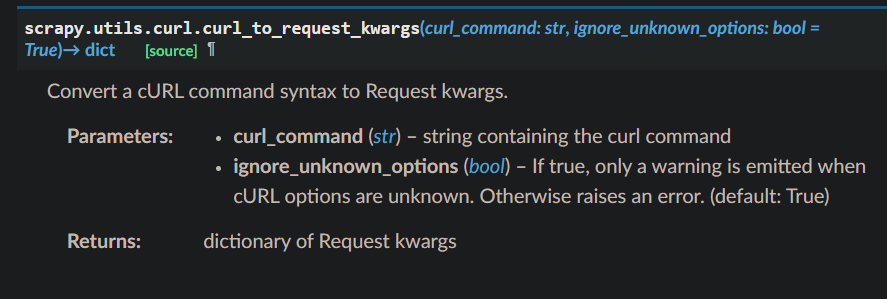

爬虫注意
大多数浏览器都支持对网页的审查，在对我们提取的数据的位置进行定位时往往需要借助网页的开发者工具。鼠标右键选择对网页“检查”即可打开该功能
检查浏览器DOM时的注意事项
当我们查看网页的DOM时，我们看到的并不是原本的html文件，而是浏览器清理和执行过Java代码的网页。例如火狐会给网页中的表格元素添加
元素，但如果这样的东西出现在我们的xpath语句中，则不能提取出任何东西。- 在对网页审查在开发者模式下禁用JavaScript（或者可以右键查看页面源代码）
- 不要使用包含全部路径的Xpath的语句（避免包含/tbody）使用相对路径或者比较大的搜索语句
动态网页抓取
在抓取网页时，有的页面是经过几次连续的请求才抓取成功的，这个时候我们可以借助检查工具中的“网络”来对网页加载的请求进行一个查看。拿https://quotes.toscrape.com/scroll网站举一个例子，打开该网站发现，该网站的页面加载功能是当我们将页面滚动到最下面之后自动加载出来的。这个时候就需要用到Net-work Tool了。打开对应的网页：

注意选定保留日志选项，防止日志被自动清楚。打开该窗口我们选择打开一个文件后可以查看我们请求网页时的信息（浏览器表示，Ip地址之类）。通过观察我们发现我们需要用到的是quotes?page=1文件，该文件是json格式，通过该文件我们 能找到我们需要爬取的数据。进而我们可以设置自己的爬虫规则：import scrapy import json class QuoteSpider(scrapy.Spider): name = 'quote' allowed_domains = ['quotes.toscrape.com'] page = 1 start_urls = ['https://quotes.toscrape.com/api/quotes?page=1'] def parse(self, response): data = json.loads(response.text) for quote in data["quotes"]: yield {"quote": quote["text"]} if data["has_next"]: self.page += 1 url = f"https://quotes.toscrape.com/api/quotes?page={self.page}" yield scrapy.Request(url=url, callback=self.parse)添加headers和cooikes
当网页比较复杂时，我们可能需要对网页进行伪装来实现对网页的爬取。首先我们可以借助浏览器的检查工具将请求导出为cURL格式，然后通过Request库中的from_curl()来实现一个正常的请求：
curl导出为scrapy request可以直接借助网站（导出为bash格式再转换）：from scrapy import Request request = Request.from_curl( "curl 'https://quotes.toscrape.com/api/quotes?page=1' -H 'User-Agent: Mozil" "la/5.0 (X11; Linux x86_64; rv:67.0) Gecko/20100101 Firefox/67.0' -H 'Acce" "pt: */*' -H 'Accept-Language: ca,en-US;q=0.7,en;q=0.3' --compressed -H 'X" "-Requested-With: XMLHttpRequest' -H 'Proxy-Authorization: Basic QFRLLTAzM" "zEwZTAxLTk5MWUtNDFiNC1iZWRmLTJjNGI4M2ZiNDBmNDpAVEstMDMzMTBlMDEtOTkxZS00MW" "I0LWJlZGYtMmM0YjgzZmI0MGY0' -H 'Connection: keep-alive' -H 'Referer: http" "://quotes.toscrape.com/scroll' -H 'Cache-Control: max-age=0'")
另外如果需要知道上述类方法的输入参数，可以通过curl_to_request_kwargs()方法查询：

本博客所有文章除特别声明外，均采用 CC BY-NC-SA 4.0 许可协议。转载请注明来自 小明的博客！
相关推荐


评论